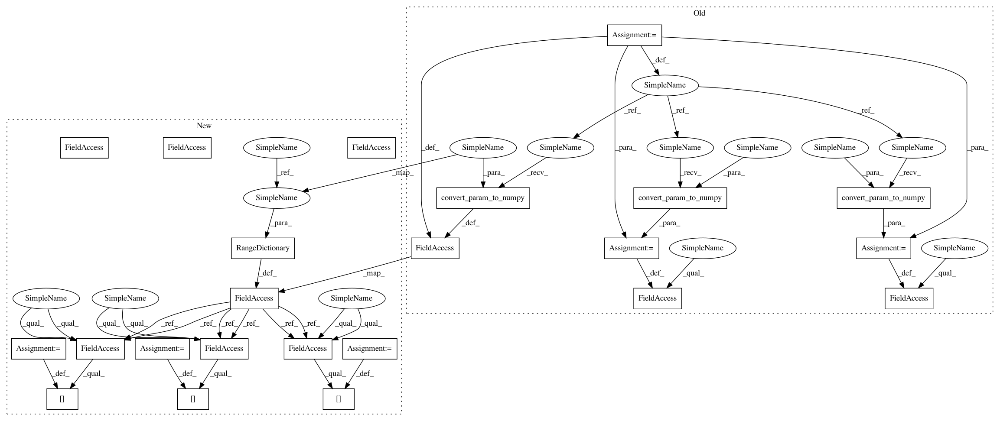

687ce44db115ab1c5af604af84b7ab6059e4cfff,spynnaker/pyNN/models/neuron/neuron_models/neuron_model_izh.py,NeuronModelIzh,__init__,#NeuronModelIzh#Any#Any#Any#Any#Any#Any#Any#Any#,50
Before Change
"i_offset": "nA"}
self._n_neurons = n_neurons
self._a = utility_calls.convert_param_to_numpy(a, n_neurons)
self._b = utility_calls.convert_param_to_numpy(b, n_neurons)
self._c = utility_calls.convert_param_to_numpy(c, n_neurons)
self._d = utility_calls.convert_param_to_numpy(d, n_neurons)
self._v_init = utility_calls.convert_param_to_numpy(v_init, n_neurons)
self._u_init = utility_calls.convert_param_to_numpy(u_init, n_neurons)
self._i_offset = utility_calls.convert_param_to_numpy(
i_offset, n_neurons)
After Change
I_OFFSET: "nA"}
self._n_neurons = n_neurons
self._data = RangeDictionary(size=n_neurons)
self._data[A] = a
self._data[B] = b
self._data[C] = c
self._data[D] = d
self._data[V_INIT] = v_init
self._data[U_INIT] = u_init
self._data[I_OFFSET] = i_offset
@property
def a(self):
return self._data[A]
In pattern: SUPERPATTERN
Frequency: 3
Non-data size: 23
Instances
Project Name: SpiNNakerManchester/sPyNNaker
Commit Name: 687ce44db115ab1c5af604af84b7ab6059e4cfff
Time: 2017-11-02
Author: christian.brenninkmeijer@manchester.ac.uk
File Name: spynnaker/pyNN/models/neuron/neuron_models/neuron_model_izh.py
Class Name: NeuronModelIzh
Method Name: __init__
Project Name: SpiNNakerManchester/sPyNNaker
Commit Name: 687ce44db115ab1c5af604af84b7ab6059e4cfff
Time: 2017-11-02
Author: christian.brenninkmeijer@manchester.ac.uk
File Name: spynnaker/pyNN/models/neuron/neuron_models/neuron_model_izh.py
Class Name: NeuronModelIzh
Method Name: __init__
Project Name: SpiNNakerManchester/sPyNNaker
Commit Name: 0c7a3c34514a0693d4a67c3c00ade2ad2385dedd
Time: 2017-11-20
Author: christian.brenninkmeijer@manchester.ac.uk
File Name: spynnaker/pyNN/models/neuron/threshold_types/threshold_type_maass_stochastic.py
Class Name: ThresholdTypeMaassStochastic
Method Name: __init__
Project Name: SpiNNakerManchester/sPyNNaker
Commit Name: 0c7a3c34514a0693d4a67c3c00ade2ad2385dedd
Time: 2017-11-20
Author: christian.brenninkmeijer@manchester.ac.uk
File Name: spynnaker/pyNN/models/neuron/additional_inputs/additional_input_ca2_adaptive.py
Class Name: AdditionalInputCa2Adaptive
Method Name: __init__